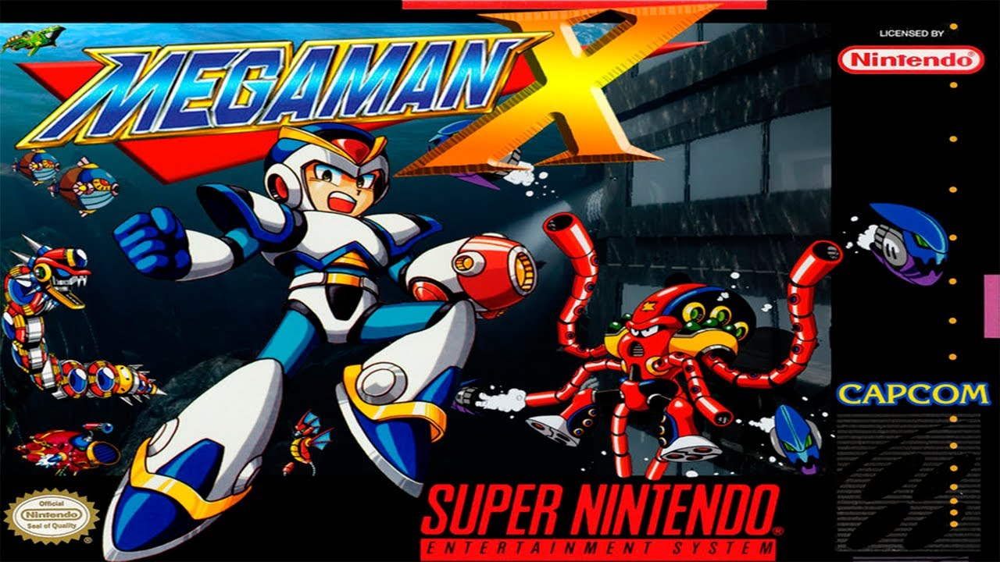

A História do Megaman X
imagem do jogo Megaman X
Mega Man X (depois de X4 estilizado como Megaman X), conhecido no Japão como Rockman X[a], é uma série de jogos de plataforma de ação lançados pela Capcom. Faz parte da franquia Mega Man. O primeiro jogo foi lançado em 17 de dezembro de 1993 no Japão (janeiro de 1994 na América do Norte) no Super NES/Super Famicom; a maioria das sequências foram portadas para a plataforma do PC. A jogabilidade introduziu novos elementos à franquia Mega Man, incluindo a capacidade de correr e escalar paredes. [1] Os seis primeiros jogos da série foram compilados na antologia Mega Man X Collection.
A Capcom lançou Mega Man X Legacy Collection 1 & 2 em 24 de julho de 2018 e 26 de julho de 2018 no Japão, para PlayStation 4, Xbox One, Nintendo Switch e Windows, que contém todos os oito jogos principais sobre ambas as coleções, bem como modos bônus. [2][3]
Mega Man X, comumente conhecido como "X", foi criado pelo Dr. Thomas Light. X era um novo tipo de robô com a habilidade de pensar, sentir e tomar suas próprias decisões. Reconhecendo o perigo potencial deste modelo (em particular se ele fosse quebrar a primeira regra da robótica: um robô nunca deve prejudicar um ser humano), Light selou X em uma cápsula de diagnóstico por mais de 30 anos de testes. [4] A cápsula de X foi descoberta por um arqueólogo chamado Dr. Cain quase 100 anos após a criação de X. Animado com as possibilidades que X apresentou, Caim desconsiderou os avisos que a Luz havia registrado na cápsula e criou uma legião de robôs que replicaram o livre arbítrio de X; esses robôs eram chamados de "Reploids" (abreviados de Replica Android, mas conhecidos como "Repliroids" no Japão).
Vários reploides se voltaram contra os humanos. Estes Reploides foram apelidados de "Mavericks" ("Irregulares" no Japão), e uma força chamada Maverick Hunters ("Caçadores Irregulares") foi formada para combatê-los. Os Caçadores maverick foram liderados por Sigma até que ele, também, tornou-se um Maverick e declarou guerra contra os humanos, assim começando a Guerra Maverick. X tomou a si mesmo para se juntar aos Caçadores Maverick sob seu novo líder Zero. Ao longo da série, X, Zero e mais tarde Axl (um protótipo do Reploid de próxima geração) lutam contra os Mavericks para parar seus planos para destruir a raça humana.
Depois que a série chegou a um cliffhanger não resolvido, um jogo intitulado "Mega Man X DiVE" foi lançado pela Capcom Taiwan no qual um humano joga Mega Man X, até que devido em parte a alguns dados corrompidos conhecidos como Maverick Data, ele/ela é transportado para o Deep Log, um banco de dados maciço com dados sobre cada jogo Mega Man. O jogador deve progredir através do código mexido da Guerra maverick, Guerra dos Elfos e do Jogo do Destino, para destruir os Dados Maverick causando a lenta corrupção do Deep Log. [citação necessária]
A Capcom lançou Mega Man X para o SNES para dar uma nova imagem à série de jogos Mega Man. Há um total de 11 jogos na série Mega Man X: Mega Man X através de Mega Man X8, Mega Man X: Missão de Comando, Mega Man Xtreme e Xtreme 2. Mega Man X Collection foi lançado em 2006 exclusivamente na América do Norte. Ele compreende os seis primeiros jogos do Mega Man X, além de Mega Man: Battle & Chase. Duas compilações foram lançadas como um pacote de combo em todo o mundo em julho de 2018, com o lançamento japonês ocorrendo dois dias após o resto do mundo: Mega Man X Legacy Collection, que tem Mega Man X através de Mega Man X4, e Mega Man X Legacy Collection 2, que tem Mega Man X5 através de Mega Man X8.
Em 2010, o Armature Studio, um estúdio de desenvolvimento fundado pelos criadores do Metroid Prime, estava desenvolvendo um atirador em primeira pessoa intitulado Maverick Hunter, que tinha a intenção de construir sobre a mitologia do Mega Man X. No entanto, foi cancelado pela Capcom após seis meses de desenvolvimento. [7]